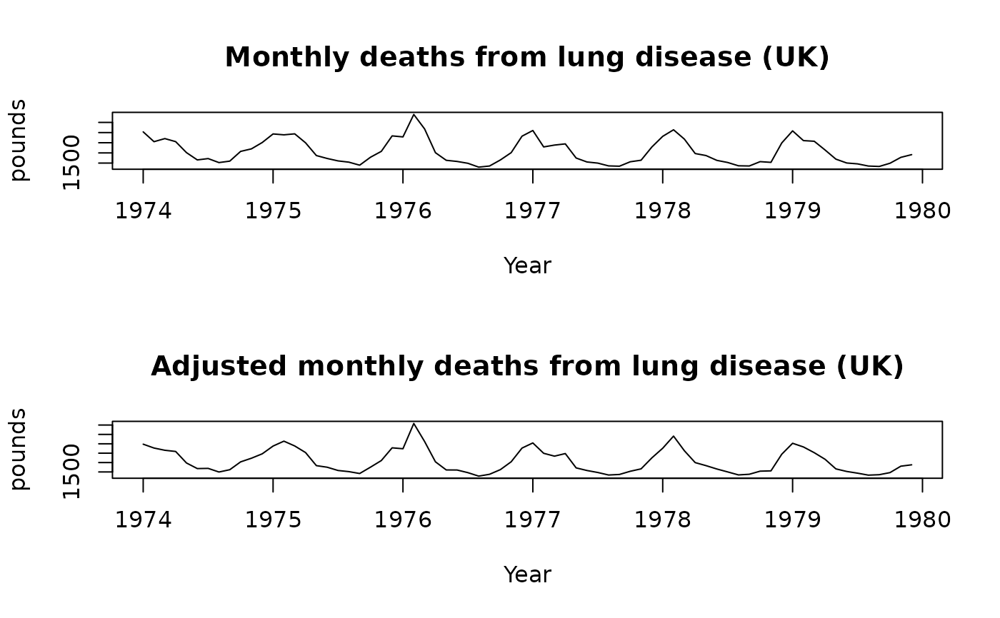

Returns number of days in each month or quarter of the observed time period.
Details
Useful for month length adjustments
Examples
par(mfrow=c(2,1))
plot(ldeaths,xlab="Year",ylab="pounds",
main="Monthly deaths from lung disease (UK)")
ldeaths.adj <- ldeaths/monthdays(ldeaths)*365.25/12
plot(ldeaths.adj,xlab="Year",ylab="pounds",
main="Adjusted monthly deaths from lung disease (UK)")
